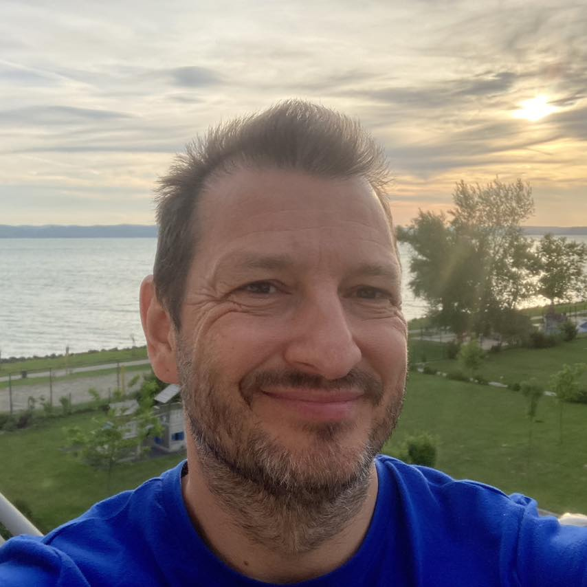

1991 óta járom az utam a tudatosság világában, ami azzal jár, hogy mára elég jól átlátom ezen a területen fellelhető lehetőségek tárát. Ennek ellenére azt kell, hogy mondjam, a Circling / Authentic Relating nagy erejű találkozásoknak bizonyultak.Teljesen más, mint minden más. Nekem szerelem lett. 😊
Nemcsak a módszer, hanem az a nemzetközi törzs, amelynek ezáltal részesé váltam.
Azt a “szintet” segít elsajátítani, ahogyan én minden kapcsolódásomban lenni szeretnék, és ahogyan az én elképzelésem szerint, egy ideális világban mindenki mindenkivel kapcsolódna.
A szándékom a Circling és testvérmódszereinek elterjesztése, ezen belül lehetőséget nyújtani Neked, hogy ráérezhess, mit adhat hozzá az önismeretedhez és hogyan emelheti a kapcsolataidat! Nagy-nagy szeretettel, Ruppert Endre Lucien
aka Lucien del Mar